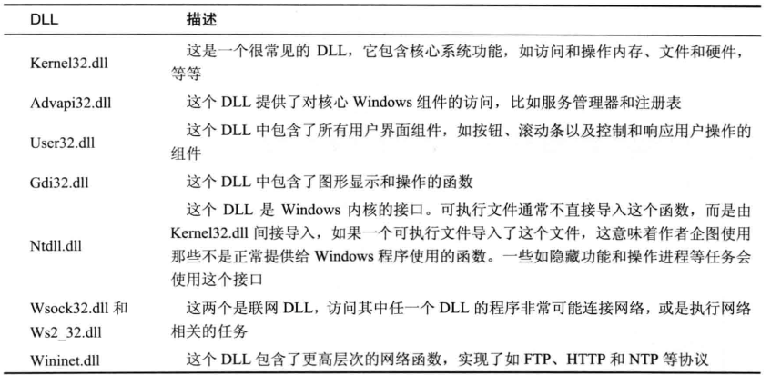
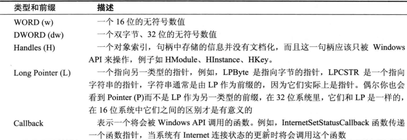
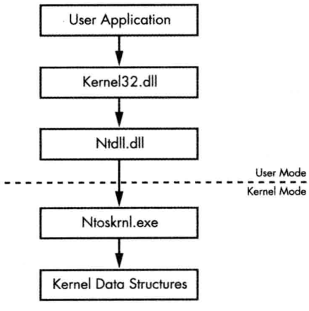

Malware Analysis
不可视境界线最后变动于：2022年12月17日 下午
静态分析
使用软件工具
- 安装的
- Resource Hacker
- IDA Free
- PEBrowse64 Professional
- 免安装
- PEView
- Dependency walk
- Process Monitor | Process Explorer
- monitor中的lower pane可以查看handle+dll,
- RegShot
过程中要注意的信息:
命名约定
当 微软更新一个函数，而且新函数与原先函数不兼容的时候，微软还会继续支待原先的旧函数 。 这时新函数会给一个与旧函数相同的名字，并在后面加上 Ex 后缀 。 而被显著更新过两次的函数，则会在它们的名字后面有两个 Ex 后缀 。
以 字 符串作为 参 数的许多函数，在它们的名字后面会包含 一 个 A 或者 一 个 w , 如CreateDirectoryW。
常见导入dll

装虚拟机遇到的问题:
- win7直接运行不了自解压程序. 遂弃用, 改为winxp.
- 32位的winxp手感真奇特. 不过工具包中的一些64位程序无法运行.
- xp里面system32目录下没有strings, 从windows官网下了一个, 原来这是在一个工具包里面的, 还有一些有趣的小工具. 好吧只有Windows Vista and higher能用. 不管了.
- 加了几个快照以防万一
IDA
- Use Standard Symbolic Constant
- 在Type Libraries里查看常量所在库是否被加载. 通常 mssdk和 vc6win会自动被加载, 要获取本地API的符号常量 , 加载ntapi
（微软Windows NT 4 . 0本地API), 分析一个 Linux二进制时，你可能需要手动加载 gnuunx (GNU C++ UNIX ) 库 .
- 在Type Libraries里查看常量所在库是否被加载. 通常 mssdk和 vc6win会自动被加载, 要获取本地API的符号常量 , 加载ntapi
- 脚本
- IDC, IDAPython
- IDC即我在pwncollege里面用到的断点代码.
- IDAPython提供了一大堆IDA Pro的SDK功能,提供了远比IDC强大许多的脚本化能力。IDAPython提供3个模块来访问IDAAPl (idaapi)、IDC接口（idc）以及IDAPython工具函数（idautils)。
Win下的程序分析
Windows API
类型
Windows 总体上使用匈牙利表达法 ， 作为 API 函数标识符。这个表达式使用 一 个前缀命名模式，来使识别 一个变量的类型更为容易。 包含一个 32 位无符号整数的变撮 ， 或DWORD , 会以 dw 开头. 还有像是:

句柄
- 句柄是在操作系统中被打开或被创建的项，比如一个窗口 、进程、模块 、 菜单、文件，等等 。句柄在它们引用 一个对象或其他某个内存位置这点上很像指针。然而，和指针不同的是，句柄不能被用来进行数学操作，并且它们不总是表示对象地址 。 你能对句柄做的唯一 的事情，就是保存它，并在后续函数调用中使用它来引用同 一个对象 。
文件系统函数
- CreateFileMappingA | MapViewOfFile : 这两个就像是mmap一样, 不过拆分成了两个函数来完成操作, 第一个函数创建一个file mapping object, 第二个函数使用其返回的handler来创建mapping.
- CreateFile : 它可以打开已经存在的文件，管道，流，以及I/O 设备，还能创建新的文件。参数
dwCreationDisposition控制CreateFile 函数是否创建一个新的文件，或是打开一个已经存在的文件 。 - ReadFile 和 WriteFile: 不能改变文件指针.
特殊文件
- P158: 共享文件 通过名字空间访问的文件 备用 数据流
Windows 注册表
- 注册表根键
- Regedit
- 自启动程序: Autoruns
- 常用注册表函数: RegOpenKeyEx RegSetValueEx RegGetValue
- .reg 文件的注册表脚本
可使用—个互斥量来确保恶意代码只有一份实例在系统上运行. 看来是系统级别的一个变量, 如果要跨进程只要openMutex获取handle即可.
服务
- Windows操作系统支持多种服务类型，它们以独特的方式执行。恶意代码最常使用的是wIN32_SHARE_PROCESs类型，这种类型将这个服务的代码保存在一个DLL中，并且在一个共享的进程中组合多个不同的服务。在任务管理器中，你可以找到一个名为
svchost.exe进程的多个实例，它们在运行WIN32_SHARE_PROCESS类型的服务。 - WIN32_OWN_PROCESs类型有时也被使用，因为它在一个.exe文件中保存代码，而且作为一个独立进程运行。
- 最后一个常见的服务类型是KERNEL_DRIVER，它被用来加载代码到内核中执行。(我们在本章后面以及第10章将扩展地讨论运行在内核中的恶意代码。)
- sc和qc命令.
- Windows操作系统支持多种服务类型，它们以独特的方式执行。恶意代码最常使用的是wIN32_SHARE_PROCESs类型，这种类型将这个服务的代码保存在一个DLL中，并且在一个共享的进程中组合多个不同的服务。在任务管理器中，你可以找到一个名为
组件对象模型 COM
- 不行文档太多了看不完, 有空再说.
- p175
- COM被实现成 一个客户服务器框架 。 客户端是那些使用 COM对象 的 程序 ，服务器是那些可复用的软件组件一也就是COM对象本身 。 微软提供了很多COM对象给程序使用 。
- COM对象通过它们 的全局唯一 标识符( GUID ) ，分为类型标识符 ( CLSID ) 以及接口标识符( CIID ) ,来进行访问
- CoCreateinstance 函数被用来获取对 COM 功能的访问 。 恶意代码使用的 一 个常用函数是Navigate , 它允许 一 个程序启动 Internet Explorer , 并访问 一 个 Web 地 址 。 Navigate 函数是IWebBrowser2 组件接口的 一部分，这个接口指定了 一个必须被实现的函数列表，但是它没有指定哪个程序会提供这 个功能。提供这个功能的程序就是实现了 IWebBrowser2 接口的COM类 。 在多数例子中 ， IWebBrowser2 接 口 被Internet Explorer实现 。 接口通过一个 叫 做lID 的GUID来标识 ，而COM类通过一个叫做CLSID 的GUID来标识。
异常
- ….
原生API
Ntdll.dll即为原生API接口导出dll.
动态分析
- 沙箱
- 沙箱不能告诉你恶意代码做了什么。它能报告基本功能，但是它不能告诉你恶意代码是 一 个定制的 S AM密文记录器，或是一个加密的键盘记录后 门 程序。这些结论需要你自己总结。
- 一些恶意代码需要系统上拥有特定的注册表项或者文件才会执行，而这些在沙箱内是找不到的。这些就可能需要包含一些合法数据，比如控制命令或者加密密钥。
rundl132.exe DLLname, Export arguments- RegMon(检测注册表行为) RegShot ProcessMonitor(这东西是行为监测) ProcessExplorer(这东西是进程浏览) dependency walker
- 进程浏览器一个特别有用的功能就是镜像标签里的验证 ( Verify ) 按钮。单击此按钮，可以验证磁盘上的镜像文件是否具有微软的签名认证 。 验证按钮验证的是磁盘上的镜像文件，而不是内存中的，因 此它可能会失效，如果一个攻击者使用进程替换技术process replacement, 那这个东西就没用了.
- 模拟网络: 这些资源可以包括DNS 域名系统、 IP 地址和数据包记录器。
- Apate DNS
- NetCat, nc命令
- Wireshark, dddd
- INetSim, internet simulation
- 调试
- 标志寄存器中的陷阱标志 (trap fl ag) 用千单步调试 。 陷阱标志置位后，处理器每执行一条指令就会产生异常 。
- Ollydbg && WinDbg
- 暂且不急, 这两个熟练使用是个大坑
恶意代码功能
恶意代码可能行为
- 下载器和启动器
- 后门: 反弹shell 远程控制 僵尸网络
- 登录凭证窃听: 没看懂
- GINA拦截: 在注册表里写入dll条目, 实现伪造的登录认证过程.
- 口令哈希转储: DLL注入.
- 击键记录: 钩子或者轮询(用户态)
- 存活机制: 一 旦恶意代码获取系统的控制权，它通常就会在系统中驻留很长一段时间 ， 恶意代码的这种行为被称为存活 。 如果存活机制足够特别，它甚至能作为给定恶意代码的指纹。
- 通常存在于注册表中. 一些受欢迎的注册表项仍值得去深入扩展：
Appinit_DLL、Winlogon和SvcHostDLL。svchost. exe 是从动态链接库中运行服务的通用主机进程 ， Windows操作系统通常同一时刻运行多个svchost.exe 实例。每个实例包含一 组服务. HKEY_LOCAL_MACHINE\System\CurrentControlSet\Services\svsvc下是schost服务的注册表项, 所有的svchost.exe DLL包含拥有ServiceDLL 值的 Parameters 键 ，这 是恶意代码编写者设置恶意DLL程序的位置, Parameters 键下另 一个值Start 用来确定服务何时启动（恶意代码通常设置为系统引导时启动)。- 特洛伊木马化系统二进制文件: 利用这种技术，恶意代码能够修改系统的二进制文件，当被感染的二进制文件下次运行或者加载时，将会强制运行恶意代码 。
- DLL 加载顺序劫持:
- 通常存在于注册表中. 一些受欢迎的注册表项仍值得去深入扩展：
- 提权
- rootkit : 隐藏恶意代码行为的工具
- 两种用户态rootkit: IAT和 inline Hook
- …